| Docker Tooling Perspective | ||
|---|---|---|
|
|
|
|
| Docker Tooling User Guide | Updating This Document | |
A new perspective known as the Docker Tooling Perspective is added.
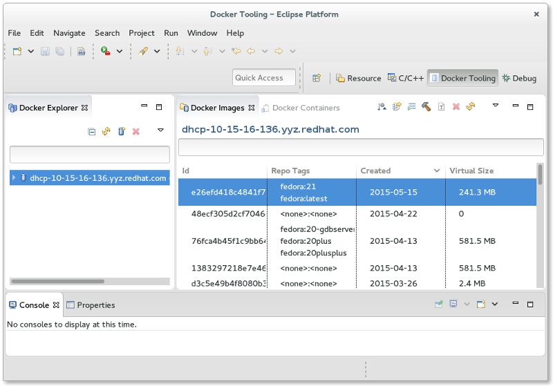
This perspective brings up three new views added:
In addition, the Docker Tooling Perspective adds the Console View and the Properties View.
The Console View is used to display logs of stdout/stderr output from Containers and in some instances, allow input to stdin. The Properties View allows clicking on various elements such as Connections, Images, and Containers and getting detailed info not readily shown in the various views mentioned above.
For example, clicking on a connection shows the following:
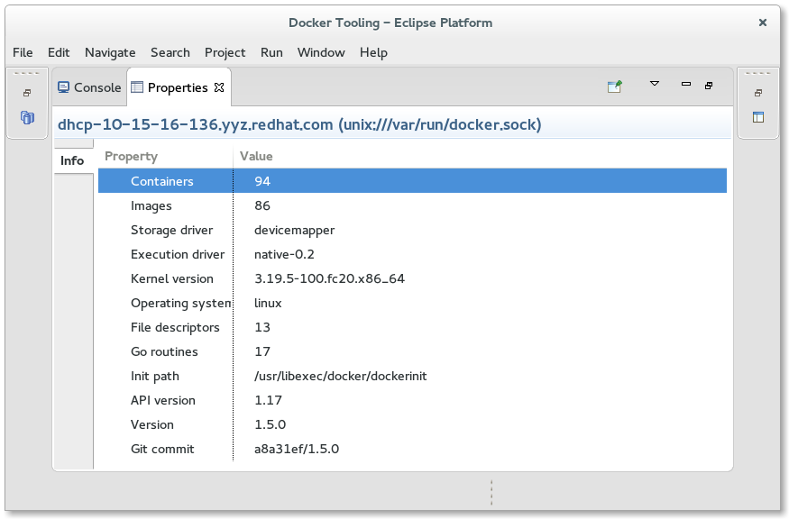
The first view is a tree view of the various connections to Docker daemons. A connection to a Docker daemon is needed before any management of Docker Images or Containers can be performed. On initial start-up, there will be no connections and the Docker Explorer View will display a message regarding this. Note that the Docker Images View and Docker Containers View are controlled by the connection selected in the Docker Explorer View. They will also note there are no connections established yet.
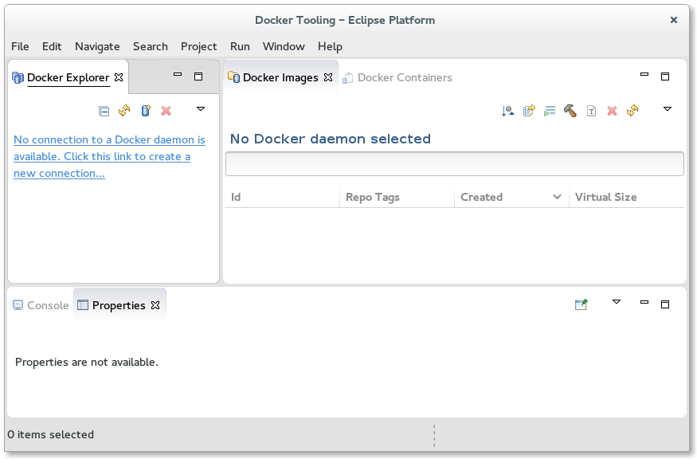
Clicking on the message will bring up the New Connection Wizard.

The wizard allows the user to select a name for the connection and specify its location. For Linux users that have a local daemon running, this will be defaulted to the Unix socket: unix:///var/run/docker.sock. If a custom connection is desired, clicking the "Use custom connection settings" checkbox will allow the user to fill in either a unix socket address or a TCP address. On Mac or Windows systems, a TCP address will be required. Authentication may be required in which case the user should click on the "Enable authentication" check-box and fill in a path to the authentication files to use.
Once the data is filled, the user can test the connection by clicking on the "Test Connection" button or simply hit the "Finish" button.
More than one connection can be specified. To add more connections, click on the
 icon
to bring up the wizard again. To delete a connection, click on the
icon
to bring up the wizard again. To delete a connection, click on the
 icon. To
refresh the tree view, click on the
icon. To
refresh the tree view, click on the
 icon. Refreshing may be required if the user
has performed management outside of Eclipse using the docker command.
icon. Refreshing may be required if the user
has performed management outside of Eclipse using the docker command.
The Explorer View shows a tree view with the main nodes being the connections. Each connection opens up to reveal Images and Containers nodes which have children nodes for Images and Containers that the connection knows about. Filtering is provided. Simply click on the generic Menu options (down arrow) and click on "Customize View...". This will bring up the following dialog:
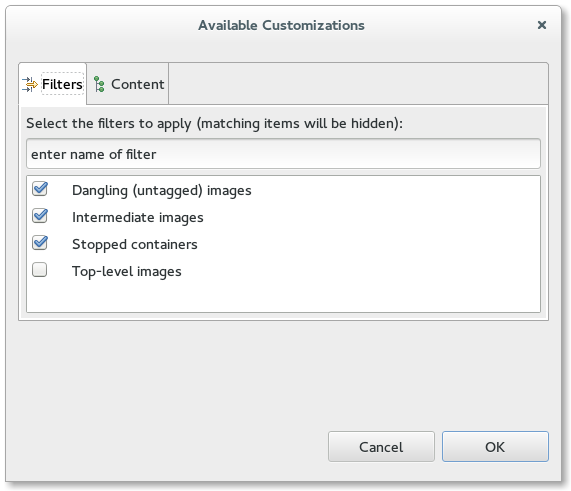
From here one can filter out:
For both Containers and Images in the Docker Explorer View, right-clicking on a selection brings up the context menu with tasks to perform on the selected item(s). Actions applying to multiple items are only enabled if the action can be performed on all selected items.
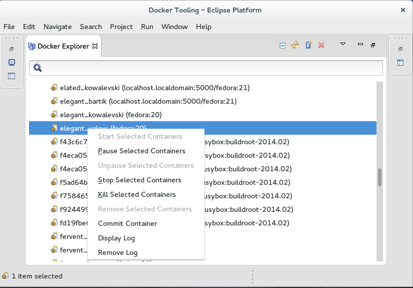
For Containers, one can:
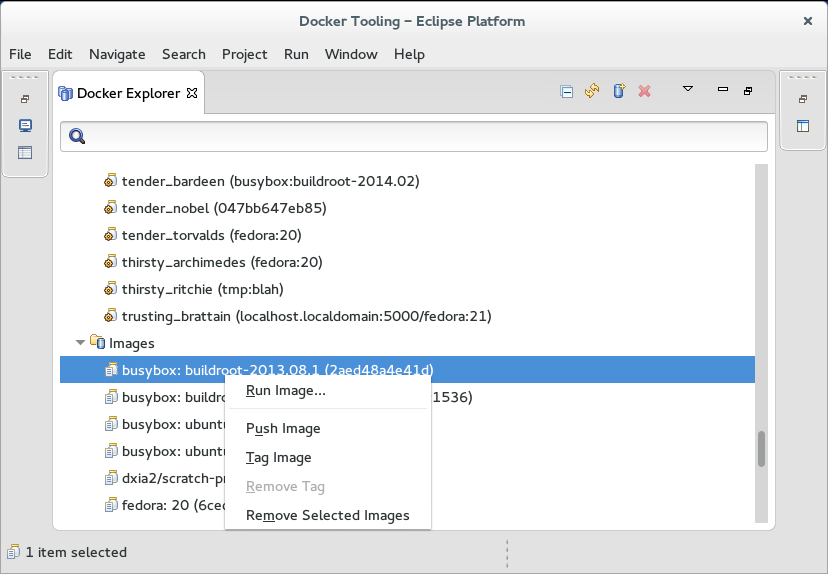
For Images, one can:
The Docker Images View is used to manage Docker Images. By default, the View shows only top-level Images that have at least one repo:tag name. The menu options allows you to see all Images by clicking the "Show all images" check-box.
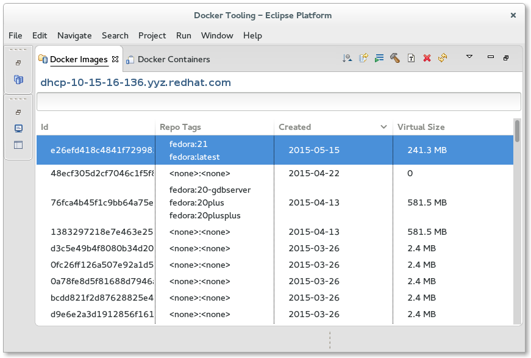
The connection used for the Docker Images View is determined by the latest selection in the Docker Explorer View. Whatever was last selected in the Docker Explorer View is queried for its connection and this is used for the Docker Images View. If there is only one connection, it is defaulted.
There are a number of toolbar actions supported in the Docker Images View:
 -
pull an Image from the Repository
-
pull an Image from the Repository
 -
push an Image to the Repository
-
push an Image to the Repository
 -
create a Container from an Image
-
create a Container from an Image
 -
build an Image from a Dockerfile
-
build an Image from a Dockerfile
 - delete one or more Images (requires confirmation)
- delete one or more Images (requires confirmation)
 -
tag an Image
-
tag an Image
There are also context menu actions supported:
The text entry below the Connection name is used to search/filter the contents of the list. Anything typed in the filter text widget is used to match items in the list (any column) and any row without a match is excluded.
Pulling a Docker Image consists of requesting a repo tag or repository specification. Specifying a repository but no tag will pull all Images from that repo (for example: fedora).
The pull Wizard is used to specify the repository or repo:tag specification.
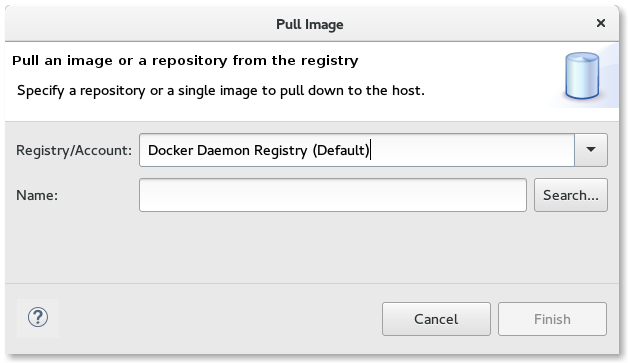
Once complete, the user hits the "Finish" button or hits "Cancel" to abort.
The pull of an Image may take a long time. This is because an Image may use several intermediate Images each of which may be several bytes. The Linux Tools Docker Tooling provides status jobs to monitor the download of the various Images and has an overall job created to monitor the status of the pull itself. When complete, refreshing of the Docker Explorer View and Docker Images View is automatic.
Pushing a Docker Image consists of specifying an existing repo tag to push. By default, Images will be pushed to the default Docker registry, but if a tag contains a registry specifier in addition to repo:tag, it will be pushed to the specified registry. To specify an external or local registry, use the Tag Image function to add a new tag to an existing Image which has the registry specifier and then push that tag.
The push Wizard is used to specify the tag to push.
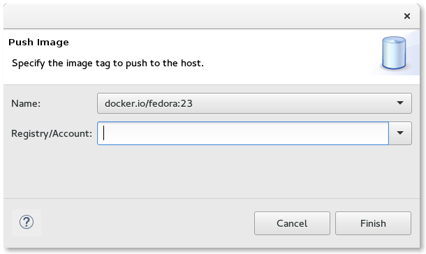
Like a pull of an Image, pushing an Image may take a long time. The Linux Tools Docker Tooling provides status jobs for the various Images being pushed (may include needed intermediate Images) and an overall job is created to monitor the status of the push job.
The Run Image Wizard is used to create a Container based on an Image.
The first page of the Wizard allows a number of common settings:
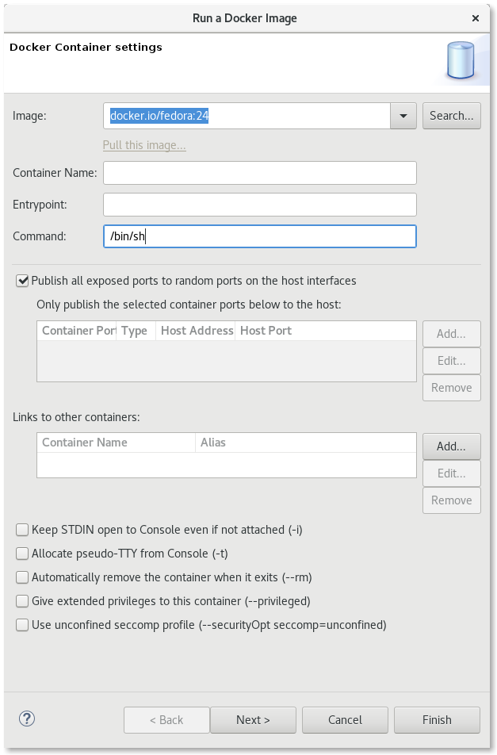
The second page of the Wizard also has a number of needed settings:
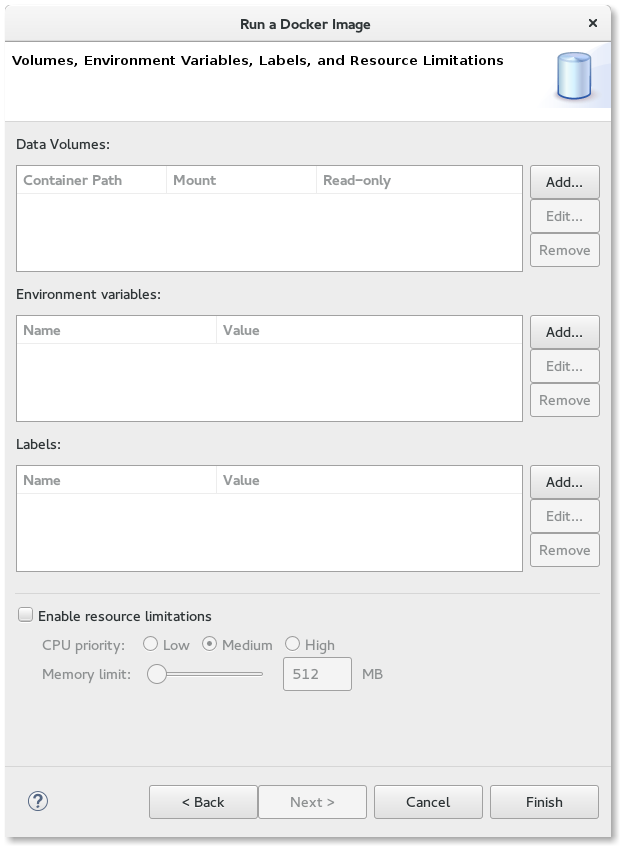
Building an Image takes an existing Image and modifies it to create a new Image. Typically this involves installing new packages. The specification of the new Docker Image is done via a special file which is always named: "Dockerfile". Clicking on the Build Image icon starts the Build Image Wizard:
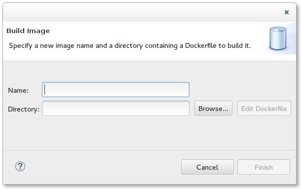
There are two fields that need to be filled in:
The directory can be specified using the "Browse" button. Once a valid existing directory is specified, the "Edit" button will be enabled, allowing creation and modification of the Dockerfile using a basic editor dialog.
When the Dockerfile is considered complete, hitting the "Finish" button will start the Image build action. When the build is complete, the Docker Images View will be refreshed automatically.
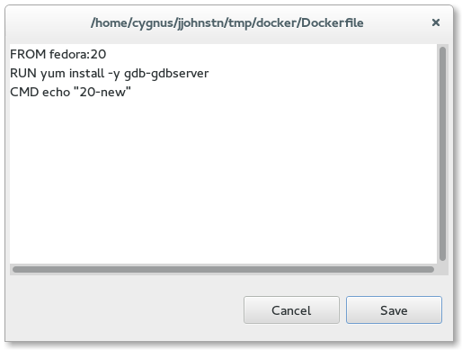
The Dockerfile editor is a rudimentary text editor with clipboard support (copy, cut, and paste). The Dockerfile is used to specify how to build the new Docker Image. The file contains a set of commands used to build the Image:
For more details, see the official Dockerfile reference
The Tag Image dialog can be brought up directly from the Docker Images View toolbar or using the context menu by right-clicking on an Image.
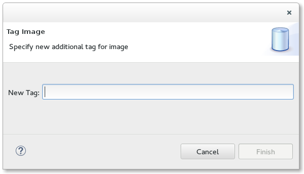
The dialog is simple and asks for a new tag to add to the Image. The tag should be of one of two forms:
Adding a tag with a registry is the way to push existing Images to local or external registries. By default, Docker pushes Images to its default registry. When pushing to the default registry, a username needs to be specified in the repository specifier because write privileges are prohibited for the base Images (e.g. fedora:20 is the official Docker Image for F20 whereas a user may have a user/fedora:20 copy they have modified).
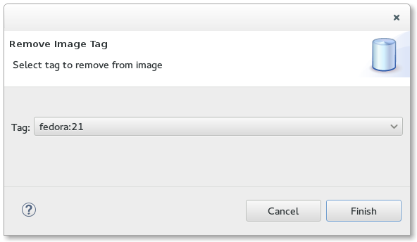
The Remove Tag dialog allows the user to remove a tag from an existing Image. This may be done to rename a tag or to keep the number of tags manageable. The Remove Tag menu item is only enabled after selecting an existing Image in the Docker Images View that has multiple tags. The dialog presents the list of possible tags to remove in a drop-down list.
The Docker Containers View is used to manage Docker Containers. By default only running Containers are shown. To see all Containers, click on the menu options and click the "Show all containers" check-box.
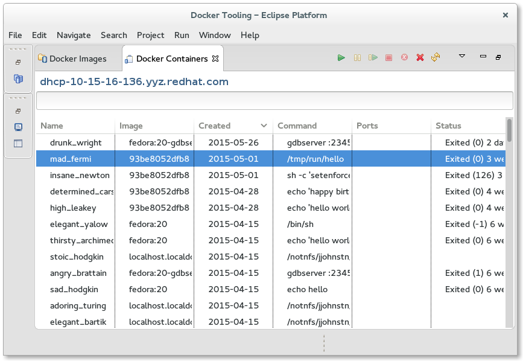
The connection used for the Docker Containers View is determined by the latest selection in the Docker Explorer View. Whatever was last selected in the Docker Explorer View is queried for its connection and this is used for the Docker Containers View. If there is only one connection, it is defaulted.
The text entry below the Connection name is used to search/filter the contents of the list. Anything typed in the filter text widget is used to match items in the list (any column) and any row without a match is excluded.
There are a number of toolbar actions supported in the Docker Containers View:
 - start a stopped Container
- start a stopped Container
 - pause a running Container
- pause a running Container
 - continue running a paused Container
- continue running a paused Container
 - stop a running Container
- stop a running Container
 - kill a running Container
- kill a running Container
 - delete a stopped Container
- delete a stopped Container
 - refresh Containers list
- refresh Containers list
It should be noted that the various actions above are enabled/disabled based on the state of the current selected Container(s) in the View. Multiple Containers can be selected for an action so long as all Containers meet the enablement requirements.
The following context menu actions are supported:
The Commit Container dialog is simple.
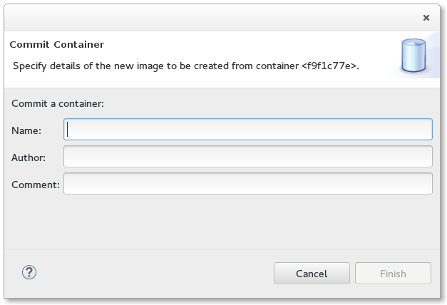
The user is required to enter:
The Display Log action opens a console in the Console View with the stdout/stderr output for the Container.

In the example above, each entry in the log is preceded by a time-stamp. This can be controlled using Window->Preferences->Docker->Logging.
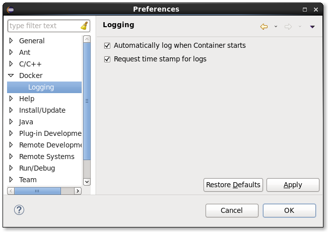
From there, one can control:
The Properties View will respond to selections in the three Docker Tooling Views: Docker Explorer View, Docker Images View, and the Docker Containers View. The data shown will depend on what is being selected:
For a Docker Image and Docker Container, there are two forms of data:
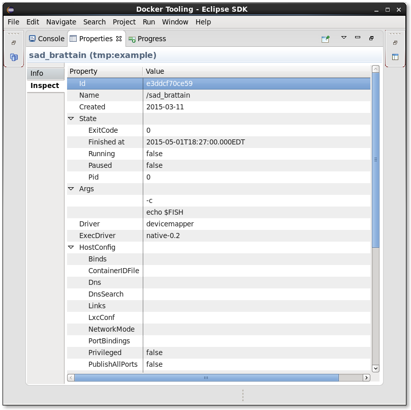
|
|

|
|
| Docker Tooling User Guide | Updating This Document |